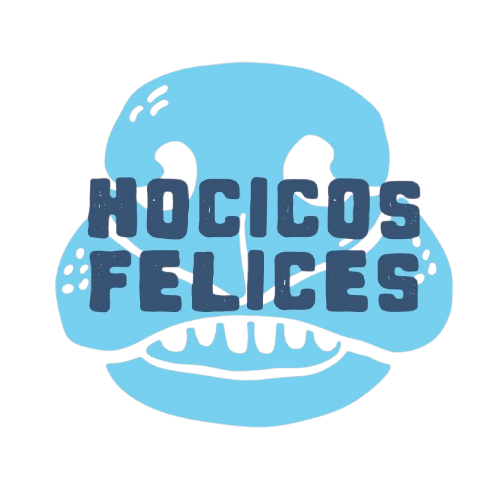

Asociación Civil · Córdoba
Estamos preparando el lugar.
Con el mismo cuidado con el que rescatamos, estamos armando el hogar digital de la asociación. Muy pronto vas a poder conocer acá a los perros y gatos que buscan familia.

Asociación Civil · Córdoba
Con el mismo cuidado con el que rescatamos, estamos armando el hogar digital de la asociación. Muy pronto vas a poder conocer acá a los perros y gatos que buscan familia.